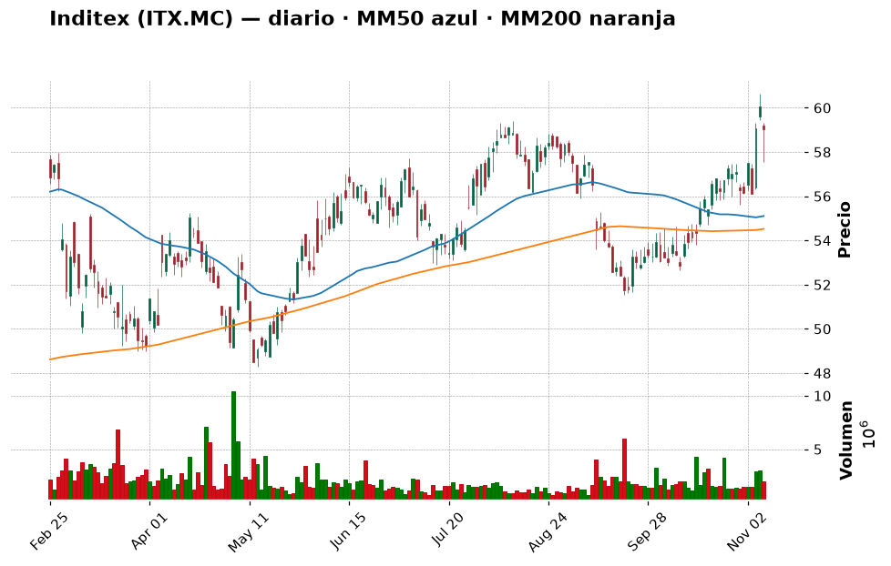
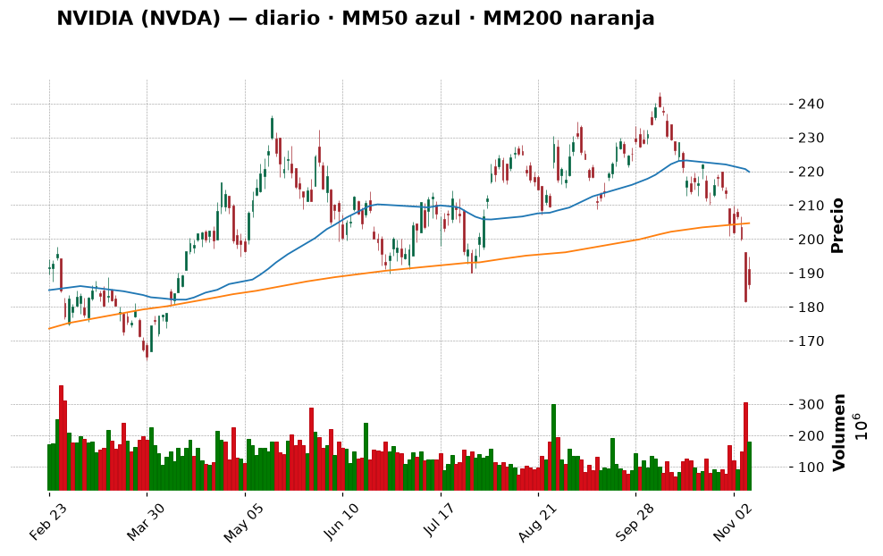
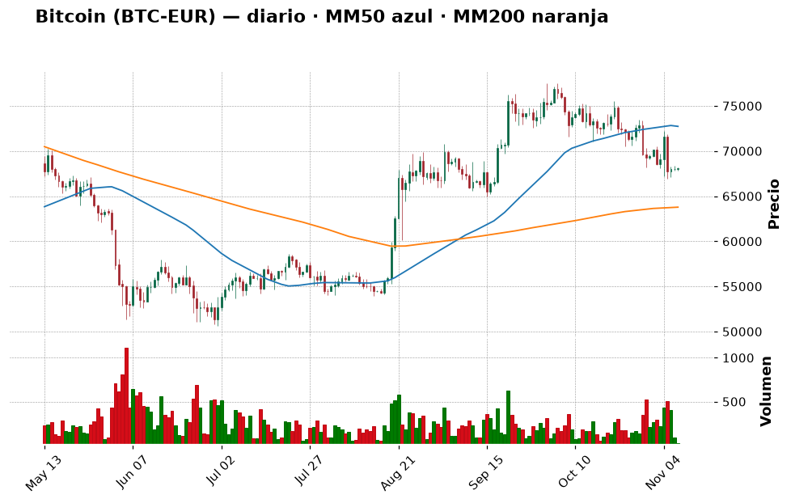
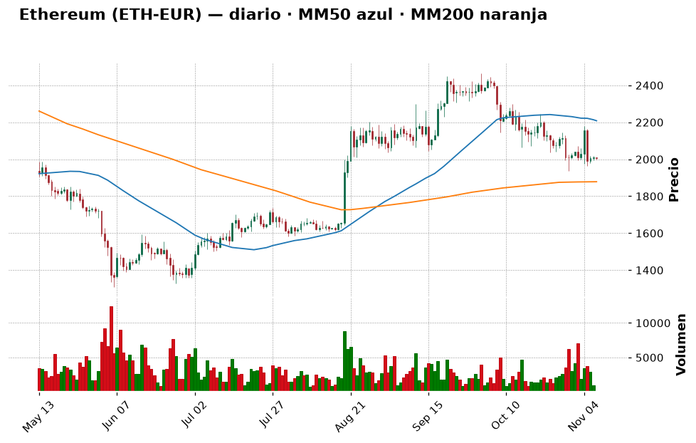

📈 Informe pre-apertura — Domingo 8 de noviembre de 2026
Generado automáticamente a las 11:00 (hora de Madrid) · Bolsa española abre a las 9:00 · Wall Street a las 15:30 · Cripto: 24/7
⚙️ Ejecución de prueba en domingo: las bolsas están cerradas hasta el lunes 9 de noviembre. Los precios de bolsa son el cierre del viernes 6 y las recomendaciones valen para la semana que empieza.
Termómetro del día: 🟡 prudencia — la Fed podría subir tipos en diciembre, la IA corrige y el martes llega la inflación de EE. UU.
Lección de hoy: El RSI: sobrecompra y sobreventa
1. Lo que tienes que saber hoy
- La semana pasada fue mala en Wall Street: el S&P 500 tuvo su peor semana desde la crisis arancelaria de abril de 2025. Su índice cae un 5 % en un mes y el Nasdaq un 9,6 %.
- Los tipos podrían subir: tras un informe de empleo mucho más fuerte de lo esperado, la probabilidad de una subida de tipos de la Fed en diciembre ronda el 77 %. Tipos más altos suelen presionar a la bolsa, sobre todo a la tecnología. 💡 Tipos de interés: el "precio del dinero". Si sube, financiarse es más caro y los bonos compiten mejor con las acciones.
- Miedo también en cripto: el índice Fear & Greed marca 28/100 (miedo) y Bitcoin cotiza por debajo de 76.000 $ con presión regulatoria.
2. ✅ Recomendaciones del día (resumen)
| Activo | Acción | Cuánto (orientativo) | Horizonte | Por qué, en una frase | Confianza |
|---|---|---|---|---|---|
| ETF S&P 500 (SPY) | Comprar | 3–5 % de la cartera, en 3 tramos (uno ahora, otros tras el IPC y a mitad de mes) | Años | Mercado castigado, RSI 35 y diversificación barata | media |
| Inditex (ITX.MC) | Esperar | — | Años | Sube bien (+11,7 % en un mes) pero está pegada a su resistencia de 59,4 € | media |
| Iberdrola (IBE.MC) | Esperar | — | Años | RSI 72: "estirada"; mejor entrar en una corrección hacia 21–21,5 € | media |
| NVIDIA (NVDA) | Esperar | — | Años | Cae un 19 % en un mes con RSI 31: puede rebotar, pero el cuchillo sigue cayendo | baja |
| Bitcoin (BTC) | Comprar | Pequeño, 1–2 % de la cartera en 4 tramos semanales | Años | Cuesta un 23 % menos que hace un año, miedo extremo y sobre su media de 200 días | baja |
| Ether (ETH) | Esperar | — | Años | Más débil que BTC (−32 % en un año) y sin señal de giro | baja |
Día para no hacer movimientos grandes: entrar poco a poco en lo sólido (ETF) y esperar a que el IPC del martes aclare si la Fed sube tipos.
3. Agenda del día
| Hora (Madrid) | Evento | Por qué importa |
|---|---|---|
| Lunes 9, 19:00 | Subasta de bonos del Tesoro de EE. UU. a 3 años | Muestra cuánta rentabilidad exigen los inversores; si sube mucho, presiona a la bolsa |
| Martes 10, 14:30 | IPC de octubre en EE. UU. | Es el dato clave para saber si la Fed sube tipos en diciembre |
| Miércoles 9 dic. | Reunión de la Fed (fuera de esta semana) | Cuando se decidiría la posible subida de tipos |
Horas orientativas (ET→Madrid): confirma en las webs oficiales del BLS y la Fed.
4. Cómo llegan los mercados
España y Europa
El Ibex 35 cerró el viernes en 19.369,5 puntos (−0,6 %), con +2,3 % en un mes y +18 % en un año. El Euro Stoxx 50 cayó un 0,98 % hasta 6.170. Ambos están "laterales": se mueven en un rango sin tendencia clara. 💡 Lateral: el precio sube y baja sin decidirse, como una pelota botando entre suelo y techo.
Estados Unidos
El S&P 500 cerró en 7.376,9 (+0,31 %) y el Nasdaq en 24.579 (+1,09 %), un rebote tras la caída semanal. El futuro del S&P 500 (el "precio adelantado" que anticipa la apertura) marcaba unos 7.402 el viernes por la tarde, según Yahoo Finance. Deutsche Bank apunta a que la posición de los inversores en bolsa sufrió una de las caídas semanales más fuertes registradas: mucha gente ya ha vendido.
Macro (tipos de interés, inflación, divisas, materias primas)
El empleo de EE. UU. sorprendió al alza (165.000 empleos frente a 65.000 previstos y paro del 4,1 %, según CoinDesk). Economía fuerte suena bien, pero obliga a la Fed a mantener o subir tipos. El euro/dólar está en 0,897 € por dólar. No he podido leer hoy datos fiables de petróleo ni del BCE: consúltalos antes de operar.
5. Panorama técnico de la watchlist
💡 Cómo leer esta tabla: la tendencia resume si el precio lleva meses subiendo, bajando o de lado
(comparando el precio con sus medias de 50 y 200 días). El RSI mide de 0 a 100 si las subidas o bajadas
recientes han sido muy fuertes: por encima de 70 se dice "sobrecompra" (quizá ha subido demasiado rápido),
por debajo de 30 "sobreventa". Son pistas, no predicciones.
| Valor | Último cierre | Día | 1 mes | 1 año | Tendencia | RSI | vs MM200 |
|---|---|---|---|---|---|---|---|
| Ibex 35 | 19.369,5 | −0,6 % | +2,3 % | +18,2 % | ➡️ lateral | 53,8 🟡 | +3,5 % |
| S&P 500 | 7.376,9 | +0,3 % | −5,0 % | +8,5 % | ➡️ lateral | 35,1 🟡 | +0,7 % |
| Nasdaq Comp. | 24.579 | +1,1 % | −9,6 % | +4,6 % | ➡️ lateral | 33,9 🟡 | −2,1 % |
| Santander (SAN.MC) | 10,70 | −1,2 % | −10,2 % | +14,9 % | ➡️ lateral | 38,8 🟡 | −5,2 % |
| Inditex (ITX.MC) | 59,04 | −1,7 % | +11,7 % | +18,5 % | ➡️ lateral | 62,8 🟡 | +8,3 % |
| Iberdrola (IBE.MC) | 22,65 | −0,5 % | +7,3 % | +27,8 % | 📈 alcista | 72,1 🔴 | +11,5 % |
| Repsol (REP.MC) | 29,90 | −1,0 % | −0,6 % | +77,5 % | 📈 alcista | 52,6 🟡 | +23,9 % |
| Apple (AAPL) | 342,37 | −0,5 % | +0,6 % | +26,7 % | 📈 alcista | 51,5 🟡 | +14,6 % |
| Microsoft (MSFT) | 530,61 | −1,0 % | +1,5 % | +4,6 % | 📈 alcista | 52,1 🟡 | +20,6 % |
| NVIDIA (NVDA) | 186,64 | +2,8 % | −19,0 % | −4,4 % | ➡️ lateral | 30,8 🟢 | −8,8 % |
| ETF S&P 500 (SPY) | 735,29 | +0,3 % | −5,0 % | +8,5 % | ➡️ lateral | 35,1 🟡 | +0,7 % |
| ETF Nasdaq 100 (QQQ) | 656,10 | +1,4 % | −12,2 % | +5,3 % | ➡️ lateral | 31,4 🟢 | −3,6 % |
Los índices de EE. UU. han perdido fuelle en el último mes, con la tecnología (NVDA, QQQ) muy castigada y cerca de sobreventa. España aguanta mejor. Iberdrola es el único valor "estirado" (RSI > 70).
6. Ideas de bolsa: qué haría un experto
ETF S&P 500 (SPY)Comprar

- Qué es: un fondo cotizado que replica las 500 mayores empresas de EE. UU. 💡 ETF: una "cesta" de muchas acciones que se compra como si fuera una sola.
- Por qué es noticia hoy: peor semana del S&P 500 desde abril de 2025.
- Lo que dice el gráfico: lateral, justo sobre su media de 200 días (+0,7 %), RSI 35 (cerca de zona baja) y apoyo cercano en 729. Está un 5 % más abajo que hace un mes.
- Lo positivo: diversificación inmediata y comisiones bajas; entrar tras una semana de miedo suele salir mejor que hacerlo en euforia.
- El riesgo: si el IPC sorprende al alza y la Fed sube tipos, puede seguir bajando.
- 🧑💼 Recomendación: COMPRAR en tramos. Es la opción más tranquila del informe y encaja con tu perfil moderado.
- Cuánto y cómo: 3–5 % de la cartera en 3 tramos (ahora, tras el IPC y a mitad de mes). Referencia: apoyo en 729.
- Horizonte: años.
- Qué me haría cambiar de opinión: cierres semanales por debajo de 716 (siguiente soporte): pararía los tramos restantes.
- Qué mirar para entenderlo: el cierre del martes tras el IPC: si aguanta sobre 729, el apoyo funciona.
- Confianza: media
Inditex (ITX.MC)Esperar

- Qué es: el grupo textil dueño de Zara.
- Por qué es noticia hoy: un análisis de Yahoo Finance la considera hasta un 27 % sobrevalorada por su flujo de caja (es una opinión, no un hecho).
- Lo que dice el gráfico: sube un 11,7 % en un mes, +8 % sobre su media de 200 días, RSI 62,8, y choca con la resistencia de 59,4 €.
- Lo positivo: empresa grande y sólida, con tendencia reciente muy fuerte.
- El riesgo: entrar justo en el techo de su rango.
- 🧑💼 Recomendación: ESPERAR. Mejor si retrocede a 55,6–56,2 € o si supera 59,4 € con volumen.
- Cuánto y cómo: nada hoy; si entra, máximo 3 % de la cartera, en 2 tramos.
- Horizonte: años.
- Qué me haría cambiar de opinión: un cierre sostenido sobre 59,4 € (comprar poco) o bajo 54,6 € (descartar).
- Qué mirar para entenderlo: el gráfico: ¿rebota o atraviesa la línea de 59,4?
- Confianza: media
Iberdrola (IBE.MC)Esperar

- Qué es: eléctrica española, de las más grandes de Europa.
- Por qué es noticia hoy: no hay noticia específica en los feeds; es el valor con el RSI más alto de la lista.
- Lo que dice el gráfico: alcista, +11,5 % sobre la MM200 y RSI 72 (sobrecompra), cerca de máximos.
- Lo positivo: defensiva, con dividendo y tendencia clara.
- El riesgo: tras subir tanto, un pequeño descanso es habitual.
- 🧑💼 Recomendación: ESPERAR a una corrección hacia 21–21,5 €.
- Cuánto y cómo: hasta 3–4 % de la cartera en 2 tramos si retrocede.
- Horizonte: años.
- Qué me haría cambiar de opinión: cierre por debajo de 20,5 € (la tendencia se rompe).
- Qué mirar para entenderlo: que el RSI baje hacia 50–55 sin perder el soporte.
- Confianza: media
NVIDIA (NVDA)Esperar

- Qué es: el gran fabricante de chips para inteligencia artificial.
- Por qué es noticia hoy: la corrección de la IA: analistas se preguntan si la caída es una oportunidad.
- Lo que dice el gráfico: −19 % en un mes, −8,8 % bajo su MM200, RSI 30,8 (casi sobreventa) y sin soporte claro cerca; el siguiente techo está en 214 $.
- Lo positivo: el RSI bajo sugiere posible rebote.
- El riesgo: una acción muy volátil; "barata" no significa "ha tocado suelo".
- 🧑💼 Recomendación: ESPERAR una señal de giro (primeros cierres al alza).
- Cuánto y cómo: si entras, ≤1–2 % de la cartera en 3 tramos.
- Horizonte: años.
- Qué me haría cambiar de opinión: recuperar los 200 $ me haría considerarla; nuevos mínimos me harían evitarla.
- Qué mirar para entenderlo: el RSI saliendo de 30 hacia arriba junto con precio estable.
- Confianza: baja
7. ₿ Criptomonedas
💡 Las criptomonedas cotizan 24 horas, 7 días a la semana: los precios son de esta mañana (en euros).
Son mucho más volátiles que las acciones: caídas del 50 % o más han ocurrido varias veces.
⚠️ Tu tope en cripto es el 25 % de la cartera: es un porcentaje alto para un perfil moderado.
Sentimiento: Fear & Greed 28/100 (miedo; ayer 25, hace una semana 34) · Capitalización total 2,66 billones $ (−0,3 % 24 h, 44,8 % bajo su máximo histórico) · Dominancia de Bitcoin 57,3 %.
El miedo ayuda a quien compra poco a poco, pero también indica que la tendencia es bajista.
Radar Coinbase (410 monedas comprables · hoy suben 67 y bajan 294 · en 7 días suben 49 y bajan 311):
- Mayores por capitalización (7 d): BTC −2,7 % · ETH −1,5 % · BNB −2,2 % · XRP −7,5 % · SOL −6,5 %
- Más suben (7 d, top 100): INJ (+13,1 %), STX (+4,8 %), ARB (+3,7 %) · Más bajan: WLD (−18,1 %), ENA (−17,8 %), NEAR (−15,5 %)
El movimiento es general: la gran mayoría baja. Nada del radar justifica más que mirar de lejos; INJ (puesto 92) sube con fuerza pero llegaría tarde.
| Moneda | Ranking | Precio (€) | 24 h | 7 días | 1 mes | 1 año | Tendencia | RSI | vs MM200 |
|---|---|---|---|---|---|---|---|---|---|
| Bitcoin (BTC) | #1 | 68.088 | +0,1 % | −3,0 % | −7,7 % | −23,0 % | ➡️ lateral | 39,9 | +6,8 % |
| Ether (ETH) | #2 | 2.006 | −0,1 % | −1,6 % | −9,6 % | −31,7 % | ➡️ lateral | 40,9 | +6,8 % |
| Solana (SOL) | #7 | 80,08 | −0,6 % | −5,4 % | −17,8 % | −41,4 % | ➡️ lateral | 31,3 | +3,2 % |
| XRP (XRP) | #5 | 1,04 | +0,1 % | −6,8 % | −16,2 % | −47,2 % | ➡️ lateral | 32,6 | −5,1 % |
Noticias que importan:
- Los usuarios de Binance en algunos países europeos deben retirar sus cripto antes de fin de año: presión regulatoria.
- El Tesoro de EE. UU. actúa contra el exchange MEXC por supuestos flujos ilícitos.
- Brecha de seguridad en Gnosis Pay: recuerda el riesgo de custodia.
Bitcoin (BTC)Comprar

- Qué es: la mayor criptomoneda, con oferta limitada a 21 millones.
- Lo que dice el gráfico: lateral, 6,4 % bajo su MM50 pero 6,8 % sobre su MM200, RSI 39,9. Ha caído un 23 % en un año.
- 🧑💼 Recomendación: COMPRAR poco a poco. Es el núcleo del bloque cripto y la mejor relación riesgo/liquidez.
- Cuánto y cómo: 1–2 % de la cartera en 4 tramos semanales, par BTC-EUR en Coinbase.
- Qué me haría cambiar de opinión: cierre diario bajo la MM200 (~63.800 €) pararía las compras.
- El riesgo: caídas del 50 % o más han ocurrido; la regulación y las ventas de ETF pesan ahora.
- Confianza: baja
Ether (ETH)Esperar

- Qué es: la plataforma de "contratos inteligentes" (programas que se ejecutan solos) sobre la que se construyen muchas aplicaciones.
- Lo que dice el gráfico: lateral, −9,1 % bajo su MM50 y −32 % en un año; peor que BTC.
- 🧑💼 Recomendación: ESPERAR a que recupere la MM50 (~2.200 €).
- Cuánto y cómo: nada hoy; luego, 0,5–1 % en 3 tramos.
- Qué me haría cambiar de opinión: cierre sobre ~2.200 € o caída bajo la MM200 (~1.880 €).
- El riesgo: más volátil que BTC y con la misma presión de mercado.
- Confianza: baja
8. 💼 Tu cartera
Aún no has registrado movimientos en inputs/cartera.csv; las recomendaciones son genéricas.
9. Análisis de riesgo
| Riesgo | Nivel | Explicación |
|---|---|---|
| IPC de EE. UU. (martes) | 🔴 | Un dato alto aumenta la probabilidad de subida de tipos y de más caídas |
| Corrección de la IA | 🟡 | Las tecnológicas arrastran a los índices (Nasdaq −9,6 % en un mes) |
| Regulación cripto | 🟡 | Binance en Europa, MEXC en EE. UU.: presión sobre el sector |
| Fallos de seguridad cripto | 🟡 | Brechas como la de Gnosis Pay |
Qué podría salir mal: el IPC sale alto, la Fed sube tipos en diciembre y la bolsa y la cripto caen otro 5–10 %. Por eso las compras van en tramos y con importes pequeños.
10. 🎓 Aprende con el informe de hoy: el RSI
- Qué es (en una frase): un indicador de 0 a 100 que mide si las subidas o las bajadas recientes han sido muy intensas.
- Ejemplo con números: si una acción sube 14 de los últimos 14 días, su RSI se acerca a 100 ("sobrecompra"); si baja los 14 días, se acerca a 0. Iberdrola tiene 72 y NVIDIA 31.
- Dónde lo has visto hoy: tablas de las secciones 5 y 7 e ideas de Iberdrola y NVIDIA.
- Por qué te importa como inversor: te ayuda a no comprar justo tras una subida enorme ni a vender por pánico tras una caída enorme.
- Error típico de principiante: pensar que RSI > 70 significa "vender ya" y RSI < 30 "comprar ya". En tendencias fuertes puede quedarse así semanas.
- Pregunta para pensar: NVIDIA tiene RSI 31 y cae un 19 % en un mes. ¿Es automáticamente una compra?
11. Consejo del día para inversores principiantes
Cuando todo el mundo tiene miedo es tentador esperar "al suelo". Nadie sabe dónde está: dividir la inversión en tramos (por ejemplo, tres) te protege tanto de comprar demasiado pronto como de quedarte fuera.
12. Glosario
- ETF: fondo que replica un índice y se compra como una acción.
- Media móvil (MM50/MM200): promedio del precio de los últimos 50 o 200 días; suaviza el ruido.
- RSI: indicador de 0 a 100 de intensidad de las subidas o bajadas recientes.
- Soporte / resistencia: niveles de precio donde históricamente el precio ha frenado una caída / una subida.
- IPC: índice de precios al consumo; mide la inflación.
- Fear & Greed: medidor de 0 (miedo extremo) a 100 (codicia extrema) del ánimo en cripto.
- Futuro: contrato cuyo precio anticipa dónde abrirá un índice.
13. Fuentes
- Investing.com ES — Bitcoin por debajo de 76.000 $
- 24/7 Wall St — Peor semana del S&P 500 · Subida de tipos en diciembre
- CoinDesk — Mercados
- Yahoo Finance — Futuros S&P 500
- Precios e indicadores de bolsa: Yahoo Finance (velas diarias, último cierre disponible)
- Cripto: Coinbase (universo de monedas y velas diarias) · Coinpaprika (datos de mercado) · Fear & Greed (alternative.me)
- Fuentes que fallaron hoy: no consulté Expansión, BCE, Fed ni Brent; la agenda semanal proviene de una sola fuente y debe confirmarse.
Respuesta a la pregunta del día: No. Un RSI bajo solo dice que ha caído mucho y deprisa; puede seguir bajando o rebotar. Es una pista que se combina con tendencia, niveles de precio y noticias. Por eso en NVIDIA recomiendo esperar una señal de giro.
Este informe lo genera automáticamente una IA a partir de noticias y datos de precios públicos y de los
movimientos que has registrado. Las recomendaciones son la opinión razonada de un modelo, no
asesoramiento financiero personalizado ni regulado: no conoce toda tu situación (ingresos, deudas,
objetivos, fiscalidad). El análisis técnico es orientativo y no predice el futuro. Invertir conlleva riesgo
de pérdida, y en criptomonedas ese riesgo es muy alto. Decide tú, contrasta la información y, si lo
necesitas, consulta con un profesional.